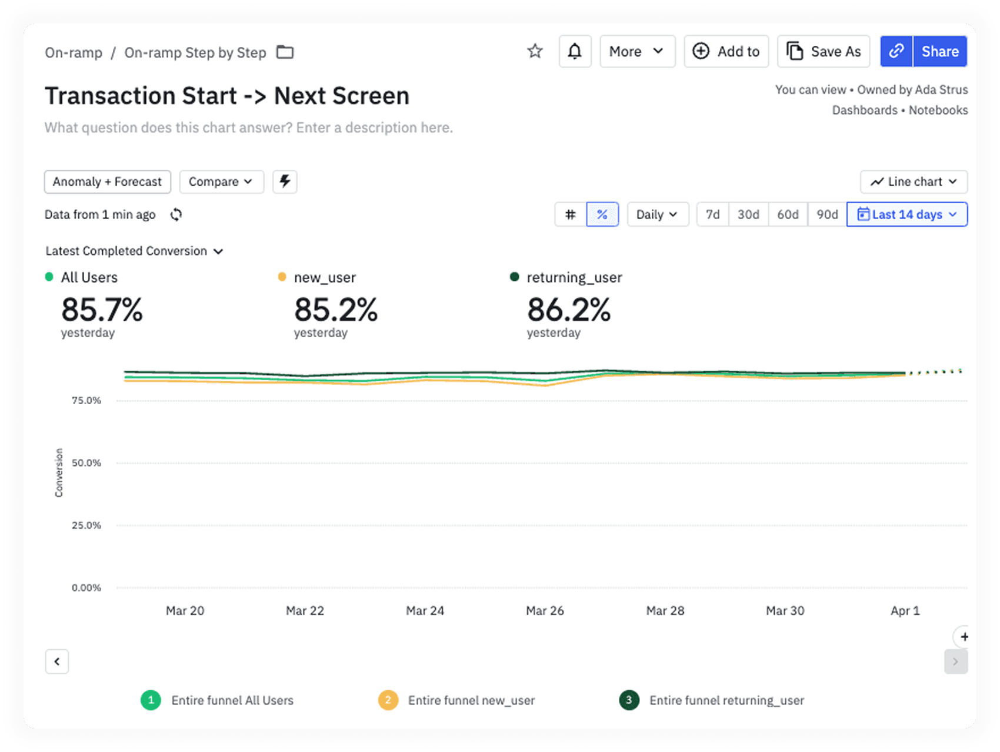
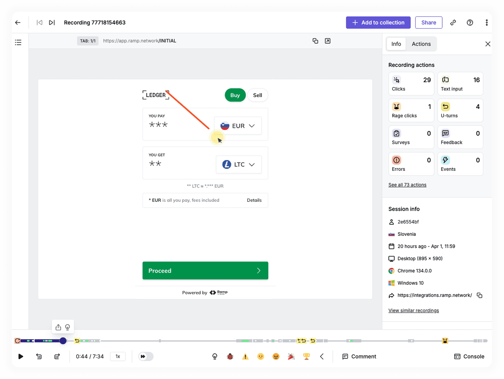
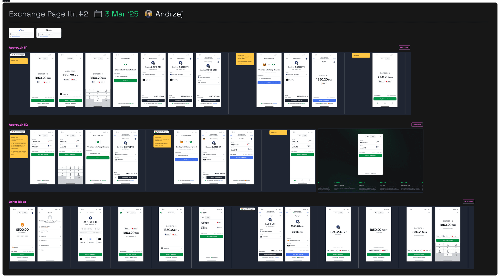
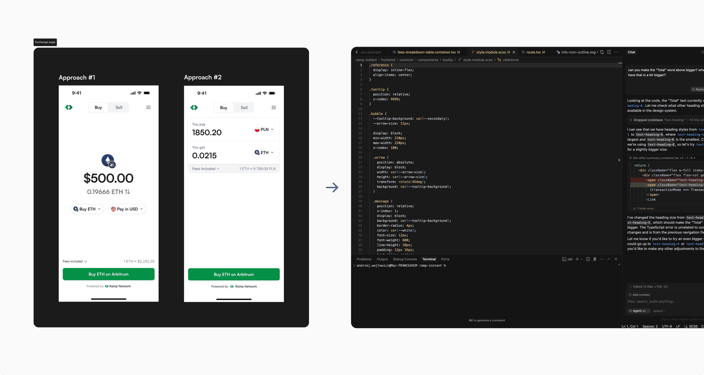
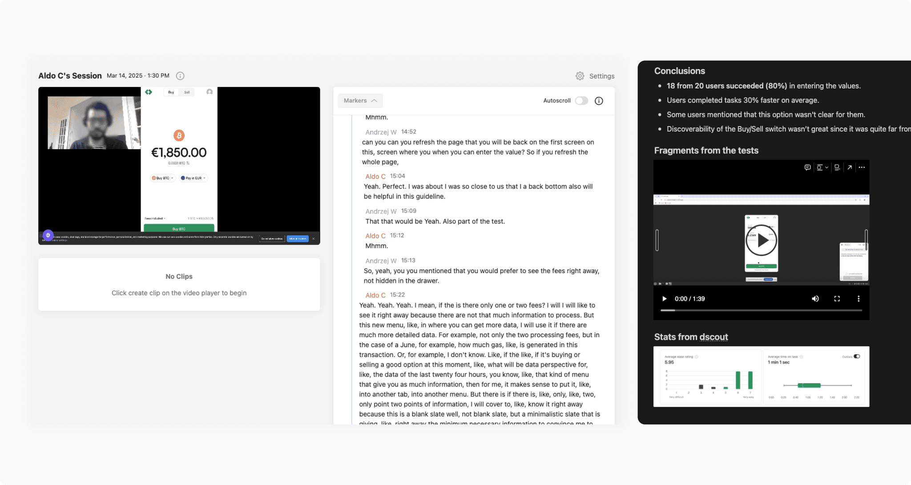
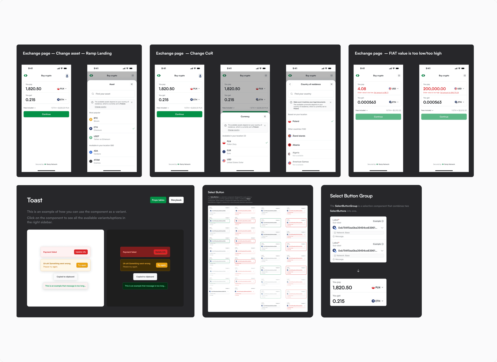
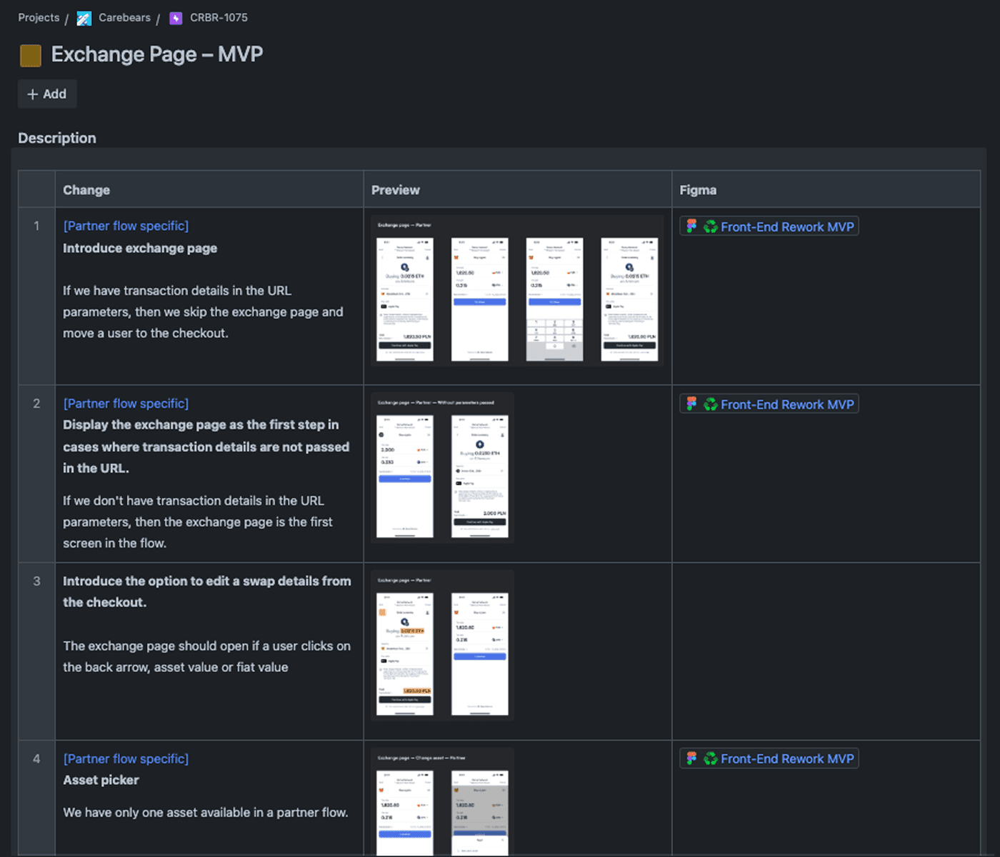
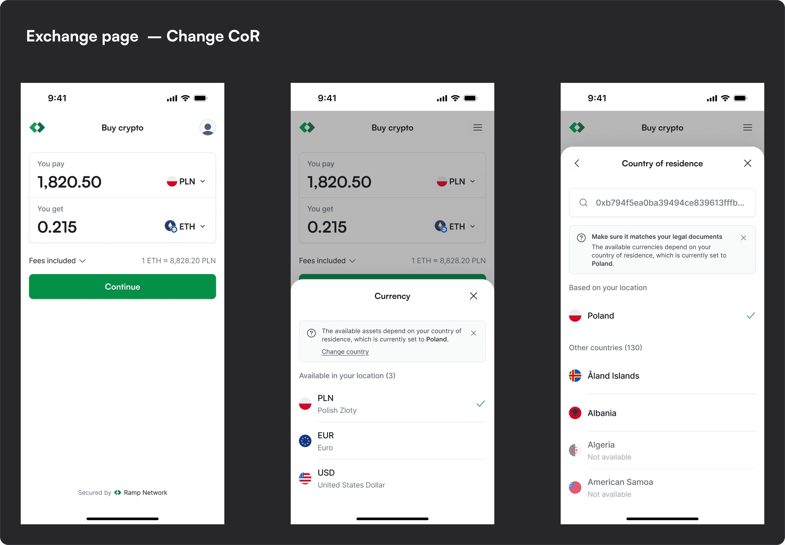

The exchange page is the first step in Ramp’s buy and sell flow. Here, users choose a token and currency, enter transaction details, and review the fees before continuing.

Process
Understanding the existing flow
As part of a wider flow redesign, I analysed the existing exchange page to identify pain points. I combined product data from Amplitude, session recordings from Hotjar, and competitor research to understand where users needed more clarity.


Ideation
I worked with the Product Manager and design team to explore several directions, assess their strengths and trade-offs, and select the most promising concepts to test.

Usability testing
We developed two high-fidelity variants and tested them through interactive prototypes. I ran 8 moderated interviews and 40 unmoderated usability tests to understand how clearly each version supported the task.


Choosing a direction
The findings showed that 20% of participants struggled to switch between inputs in the first variant. Based on the results, we selected the second variant and used the insights to refine the final design.

Design, handoff, and release
I documented edge cases, refined the design with the product team, and added any missing components to the design system. I then partnered with engineering to define the Jira scope and acceptance criteria, supported implementation, and monitored the release through internal testing, A/B tests, and product analytics.


Outcome
The redesigned exchange page contributes to a smoother crypto transaction experience used by Ramp customers around the world.